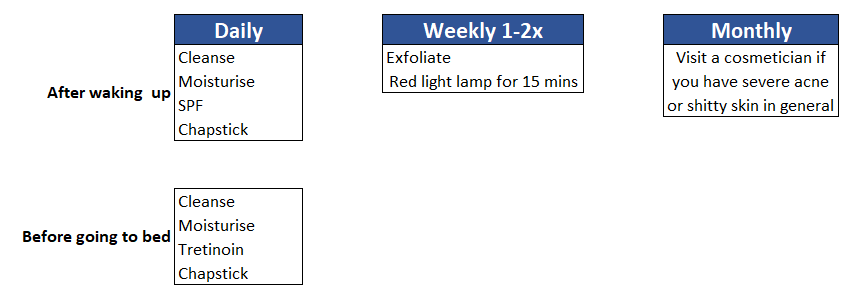
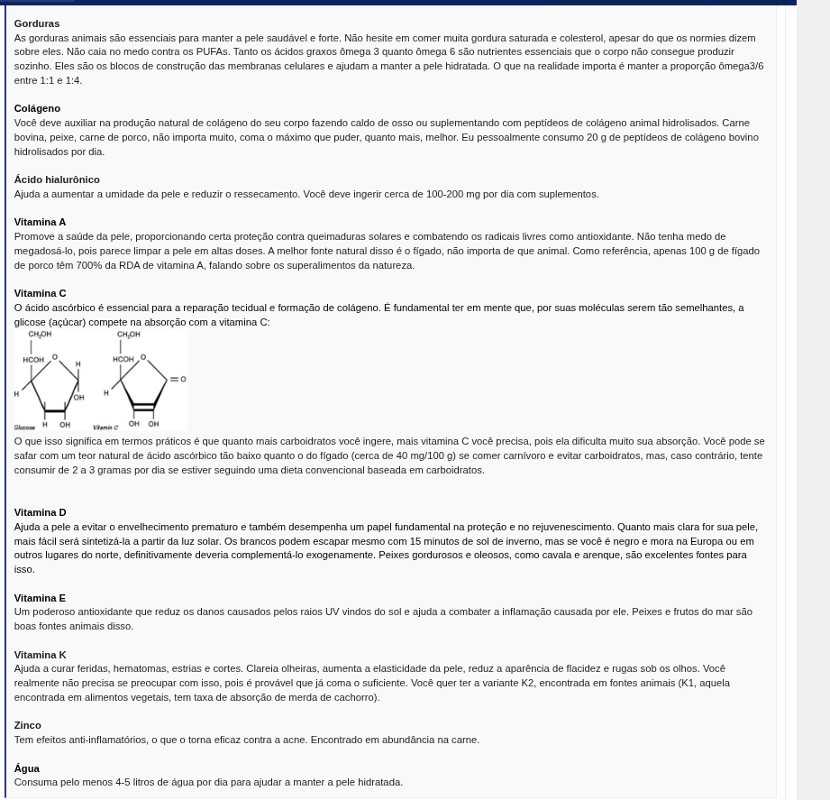

- beber muita agua (se possivel agua de coco)
- alongar o pescoco
- fazer exercicio pro pescoco
- manter postura correta 24horas
- alimentacao boa
- deixar sobrancelha crescer 4/6 semanas se quiser sobrancelhas melhores
- descobrir se fica melhor com cabelo curto ou grande e escolher o que seja melhor (pergunte ao chatgpt,veja o formato do seu rosto e procure melhorar de acordo com sua genetica)
- como fazer a sobrancelha(masculina)
- hidratar os labios toda vez que fizer skincare
- tome cha/cafe (ajuda para desinchar o rosto)
- diminua consumo de sal
- consuma mais potássio
- 
- 
imagem do site looksmax.org, de foruns
- offtopic=rotina de treino boa
- Sono=Procure dormir entre 8 e 10 horas para maximizar a produção do hormônio do crescimento (que atinge seu pico durante o sono profundo).
- Nutrição=Vitamina D3 + K2 (gemas de ovo, luz solar e natto)
Proteínas (carnes e ovos)
Cálcio (leite, queijo, etc.)
Zinco (nozes e sementes)
- Outros=Limite o uso do celular tarde da noite e evite a cafeína.Luz solar pela manhã (ajuda a dormir melhor, o que aumenta a produção de GH).
- durma de lado se prefirir, especificamente do lado esquerdo por ter melhores condicoes corporais para sua saude, que nem o primatas dormem, mas use travesseiros em locais especificos para nao ter problemas da cintura de um lado ser maior que o outro, encontre mais aqui